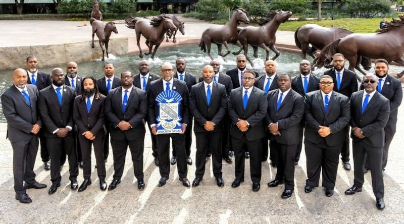
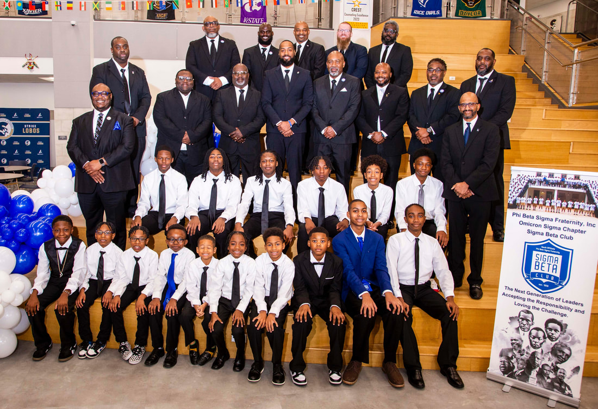

01
Bigger & Better Business
Building economic strength through entrepreneurship, professional development, and financial education.
Explore the program ↗
North Dallas Sigmas · Since 1933
The North Dallas Sigmas of Phi Beta Sigma Fraternity, Inc. advance brotherhood, scholarship, and service across North Dallas, Denton, and Collin counties.
Our charge
“Culture for Service and Service for Humanity.”
We are men of vision and character, united by a responsibility to turn preparation into progress for the communities we call home.
How we serve
Our international program areas become local action through initiatives built around the real needs of North Texas families, professionals, and young people.
Building economic strength through entrepreneurship, professional development, and financial education.
Explore the program ↗Creating pathways for students through scholarships, mentoring, collegiate support, and academic enrichment.
Explore the program ↗Mobilizing brothers and partners around the issues that shape health, opportunity, and quality of life.
Explore the program ↗A North Texas legacy
Chartered on December 1, 1933, Omicron Sigma is one of Phi Beta Sigma’s oldest graduate chapters. Since its reactivation in 2006, the chapter has continued to create meaningful impact throughout the Dallas-Fort Worth area.
On the calendar
Find upcoming gatherings, service opportunities, and community events from the chapter calendar.
Calendar checked October 19, 2026. Confirm event details on ClubExpress.
Building what comes next
Through youth development, academic support, and positive male mentorship, the Sigma Beta Club helps young men build the confidence and character to lead.
Meet the Sigma Beta Club ↗
Mentorship · Leadership · CharacterYour place in the work